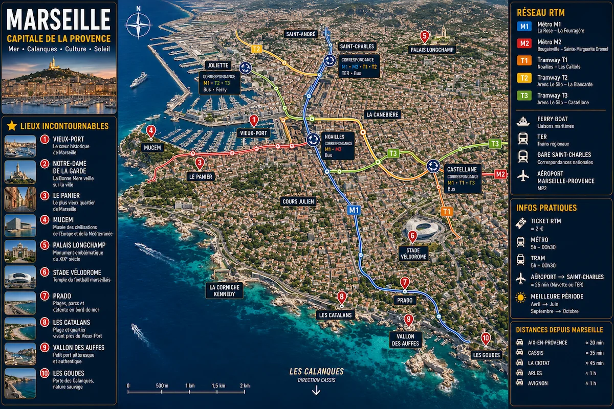

Retrouve le Vieux-Port, Notre-Dame de la Garde, Le Panier, la Joliette, la Corniche, les Calanques, ainsi que les principales lignes de métro et de tramway pour explorer facilement la cité phocéenne.

Les deux lignes de métro et les trois lignes de tramway permettent de rejoindre facilement le Vieux-Port, la Joliette, Castellane, le Prado et les principaux quartiers de Marseille.
Le cœur historique de Marseille réunit le Vieux-Port, les ruelles colorées du Panier, les terrasses animées et les principaux monuments de la ville.
La Corniche Kennedy, les plages du Prado et les Calanques offrent certains des plus beaux panoramas de la Méditerranée, entre mer turquoise et falaises calcaires.
Surnommée la Bonne Mère, la basilique domine Marseille et offre une vue spectaculaire sur le Vieux-Port, les îles du Frioul et toute la cité phocéenne.
Découvre les meilleurs quartiers, restaurants, plages, activités, Calanques et expériences incontournables de Marseille grâce au guide complet Vidolta.
Retour au guide Marseille →